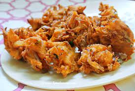

Onion Pakoda

Description
Onion Pakodas are deep fried snacks from the Indian sub-continent. These are made from gram flour, salt, spices and the main ingredient is onion. It is one of the most favourite snack which usually goes well with mint chutney and tea.
Ingredients
- 400 grams onion
- 3 chilli
- Few curry leaves
- 2 tbsp coriander
- 1 tsp chilli powder
- ¼ tsp turmeric
- ¼ tsp cumin powder
- 1 tsp ginger paste
- ¾ tsp salt
- 1½ cup besan / gram flour
- ¼ cup rice flour
- Oil
STEPS
- Firstly, thinly slice the onions. Make sure to slice in uniform thickness as it helps to fry easily.
- Transfer the sliced onion into a large bowl. Now add 3 chilli, few curry leaves, 2 tbsp coriander, 1 tsp chilli powder, ¼ tsp turmeric, ¼ tsp cumin powder, 1 tsp ginger paste and ¾ tsp salt.
- Squeeze and mix well making sure all the spices are well combined and onions release moisture.
- Further add 1½ cup besan, ¼ cup rice flour and mix well, squeeze and mix without adding any water, as the water in the onion is enough to form the dough. Add more besan if required.
- Now drop the dough into hot oil forming a random shape.
- Fry on medium flame stirring occasionally, fry until the pakoda turns golden brown and crisp.
- Finally, drain off the pakoda and enjoy with hot tea.